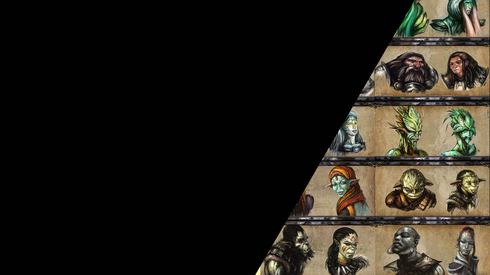

Races
Step by Step Creating a D&D 5e Character Tutorial
Each race has particular stats that you should keep track of:
- Ability Score Changes
- Age
- Typical alignment
- Size
- Speed
- Vision
- Proficiencies
- Languages
- Traits
Many times a race can impact your role play and which class you may wish to choose if you plan on choosing the optimum combat ability
Races:
- Ability Scores:Constitution increases by 2
- Age: Mature at same rate as humans but considered young unil they're 50, the can live up to 350 years
- Alignment: Most are lawful and tend towards good.
- Size: Between 4 and 5 feet and average 150 pounds. They are medium size
- Speed: Walking speed is 25ft and is not reduced by heavy armor
- Darkvision: You can see in dim light within 60ft as if it is bright light and in darkness as if it were dim light
- Proficiencies: Proficiency with battleaxe, handaxe, throwing hammer, warhammer, artisan's tools(smith's tools, brewer's supplies or mason's tools)
- languages: Common and dwarvish
- Resilience: Advantage on saving throws against poison and resistance against poison
- Ability Scores: Dexterity increase by 2
- Age: Mature at same age as humans, claim adulthood at 100, live up to 750 years
- Alignment: Generally like freedom and self expression so they lean toward neutrality
- Size: Between 5 and over 6 feet tall with slender builds. They are medium size
- Speed: Walking speed is 30ft
- Darkvision: You can see in dim light within 60ft as if it is bright light and in darkness as if it were dim light
- Proficiencies: Perception
- Fey Ancestry: Advantage on saving throws against charmed, magic cannot put you to sleep
- Trance: You don't need to sleep and instead go into a trance-like state, can gain the benefit of 8 hours of sleep in 4
- Languages: Common and Elvish
- Ability Scores: Dexterity increases by 2
- Age: Claim adulthood at 20, live up to 250 years
- Alignment: Most are lawful good
- Size: About 3 feet tall and weigh about 40 pounds.They are small
- Speed: Walking speed is 25ft
- Vision: You have normal Vision
- Lucky: When you roll a 1 on an attack roll, ability check or saving throw you can reroll and must use the new roll
- Brave: Advantage on saving throws against frightened
- Halfling Nimbleness: You can move through the space of any creature that is at least one size larger than you
- Languages: Common and halfling
- Ability Scores: All scores increase by 1
- Age: Claim adulthood in late teens, live less than 100 years
- Alignment: Tend to no particular alignment
- Size: Between 5 and well over 6 feet tall. Size is medium
- Speed: Walking speed is 30ft
- Vision: You have normal Vision
- Languages: Common and one language of your choice
- Ability Scores: Strength increases by 2 and Charisma by 1
- Age: Claim adulthood at 15, live up to 80 years
- Alignment: Most are good, but some lean to villainy
- Size: Generally taller and bigger than humans, well over 6 feet tall and almost 250 pounds. They are medium
- Speed: Walking speed is 30ft
- Vision: You have normal Vision
- Draconic Ancestry: Can choose one type of draconic ancestry which give a greath weapon and damage resistance.
- Languages: Common and draconic
- Ability Scores: Intelligence increases by 2
- Age: Claim adulthood at late teens, live up to 500 years
- Alignment: Most are good
- Size: Between 3 and 4 feet tall and weigh about 40 pounds.They are small
- Speed: Walking speed is 25ft
- Darkvision: You can see in dim light within 60ft as if it is bright light and in darkness as if it were dim light
- Gnome Cunning:Advantage on all intelligence, wisdom and charsima saving throws against magic
- Languages: Common and gnomish
- Ability Scores: Charisma increases by 2 and two other scores increase by 1
- Age: Claim adulthood at 20, live longer than 180 years
- Alignment: Most are neutral
- Size: Between 5 and well over 6 feet tall. Size is medium
- Speed: Walking speed is 30ft
- Darkvision: You can see in dim light within 60ft as if it is bright light and in darkness as if it were dim light
- Fey Ancestry: Advantage on saving throws against charmed, magic cannot put you to sleep
- Skill Versatility:Proficiency in two skills of your choice
- Languages: Common, elvish and one language of you choice
- Ability Scores: Strength increases by 2 and Constitution by 1
- Age: Claim adulthood at 14, live up to 75 years
- Alignment: Most are not good
- Size: Between 5 and well over 6 feet tall. Size is medium
- Speed: Walking speed is 30ft
- Darkvision: You can see in dim light within 60ft as if it is bright light and in darkness as if it were dim light
- Menacing: Proficent in intimidation
- Relentless Endurance: When reduced to 0 hit points instead drop to 1 once per long rest
- Savage Attacks: Roll an additional damage die on critical hits
- Languages: Common and orcish
- Ability Scores: Charisma increases by 2 and Intelligence by 1
- Age: Claim adulthood at 20, live longer around 100 years
- Alignment: Most are chaotic
- Size: Between 5 and well over 6 feet tall. Size is medium
- Speed: Walking speed is 30ft
- Darkvision: You can see in dim light within 60ft as if it is bright light and in darkness as if it were dim light
- Hellish Resistance: Resistance to fire damage
- Infernal Legacy:You know the thaumaturgy cantrip, at level 3 hellish rebuke once per day as a 2nd level, at level 5 darkness once per day
- Languages: Common and infernal